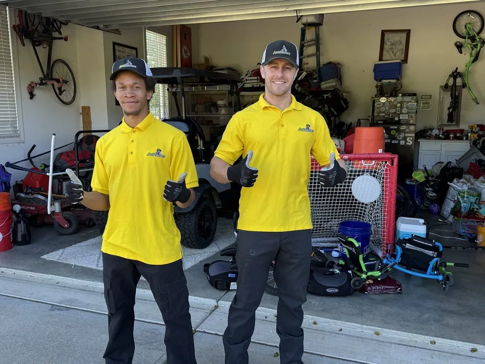
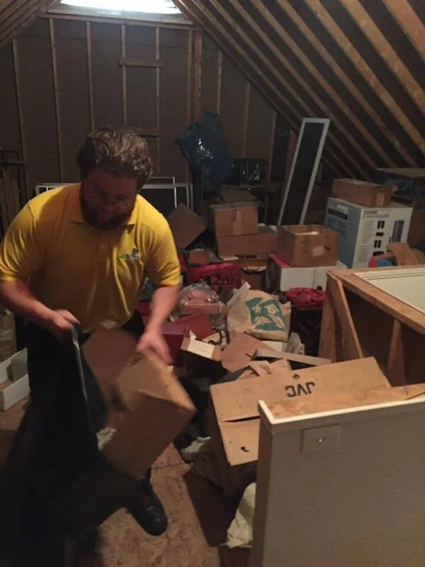
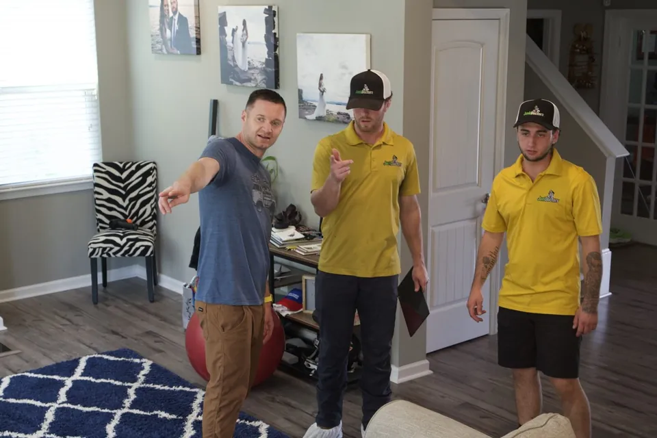
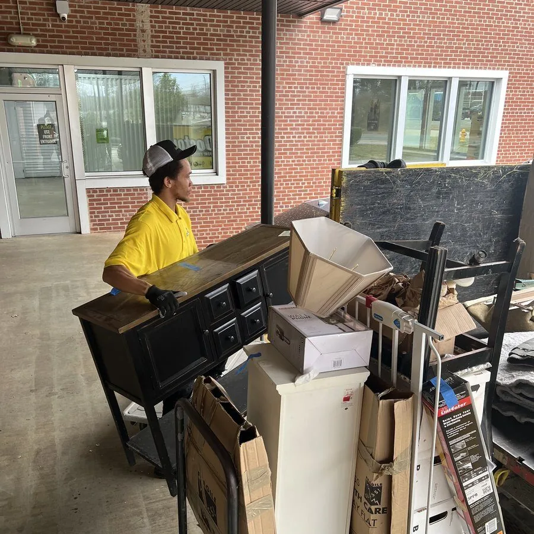

Raleigh, NC
Cleanouts
Serving Wake County and nearby towns in Durham, Orange and Johnston Counties
You don't sort a thing. Tell us what stays and we clear the rest.

- Free on-site estimates
- No obligation
- Same-day often available, call before 3pm
One room or the whole property
Moving, selling a parent's house, or getting the garage back. Leave it how it is and tell us what stays.

Basement & attic cleanoutsStairs and tight corners are on us
- Boxes and storage bins
- Old furniture and mattresses
- Carpet and rugs
- Anything up or down the stairs

Estate cleanoutsFor families and executors
- Every room, top to bottom
- We set aside what the family keeps
- Work around the realtor or attorney

Office cleanoutsDesks, chairs, IT and retail fixtures
- Desks, chairs and cubicles
- Filing cabinets
- Computers and IT equipment
- Retail fixtures
Also on the list
Garage cleanoutsBoxes, tools, years of buildup
- Years of boxes and clutter
- Old tools and shelving
- Bikes, toys and sports gear
- Old furniture and appliances
Hoarding cleanoutsDiscreet, at your pace
- One room or the whole home
- You decide what stays
- Calling for a family member is fine
Whole house cleanoutsMoving, selling, or just full
- Every room and closet
- Furniture and appliances
- Garage, attic and basement too
Rental, apartment & storage unitsLease ends and move outs
- Tenant move outs
- Apartment turnovers
- Storage units
- Sheds and backyard buildings
Not sure what counts as a cleanout? Call and describe the space.
Call (919) 372-0602How a job goes


The Junk Doctors crew
Christian Fowler and Lee Godbold started Junk Doctors in Raleigh in 2011. It's NC owned and operated, with offices in Raleigh, Charlotte and Greensboro.
Crews are background checked, licensed and insured, and paid hourly, never on commission, so nobody has a reason to inflate your price.
What customers said
★★★★★Trusted them to go in my garage without me home and they did great work. Great communication.
Mackey M. · Garage cleanout, Raleigh
★★★★★Junk Doc did a great job of clearing out 4 storage buildings from my backyard. Everything was moved away.
Janet H. · Backyard cleanout, Raleigh
★★★★★My wife and I inherited responsibility for cleaning out a condo that had become a hoarder situation. It was intimidating to say the least. Junk Doctors sent over a truck and two guys. Within a couple hours they had most of the downstairs purged. It was amazing to watch and such a relief to see the floor again. We're not done with the condo yet, and I actually look forward to working with Junk Doctors again.
Drew R. · Estate cleanout, Raleigh
From reviews Junk Doctors customers left, as shown on junkdrs.com.
Reviews and rating pulled live from Google.
Where we work
All of Wake County, plus nearby towns in the shaded counties.
- Wake County
- Durham County
- Orange County
- Johnston County
Near the line?
Give us a call. We may be able to come to you, especially for bigger jobs.
Questions people ask before they call
Something else on your mind? Call and ask.
(919) 372-0602
Do I need to sort or bag anything first?
No. Leave it how it is. Just tell us what stays.
Do I have to be home?
Not always. Walk us through what stays, or tell us on the phone, and we can work while you're away.
How does pricing work?
It's based on how much room your stuff takes up in the truck. The crew gives you an on-site estimate and a firm price, and you approve it before anything is lifted. The price you approve is the price you pay.
How long does a cleanout take?
A garage or a couple of rooms is often done in a few hours. A full house can take longer, and the crew will tell you what to expect once they see it.
Can you work with our realtor, landlord or attorney?
Yes. Tell us who to coordinate with and we'll work around their timeline.
More questions (4)
What happens to things that are still usable?
We look at what you have and decide where each item needs to go. Some things are recycled, some are donated, and the rest is disposed of responsibly. Want something donated? Tell us and we'll try to match it with a donation center. What a center accepts is up to them.
Can you come today?
Same-day is often available if you call before 3pm, Monday to Saturday. Otherwise we get you on the schedule for the next opening with a 2 hour arrival window.
Who shows up?
A Junk Doctors crew. Our crews are background checked, licensed and insured, and paid hourly, never on commission, so nobody has a reason to inflate your price.
When do crews work?
Monday to Saturday, 8am to 7pm. Call to get on the schedule.

Ready when you are
Get your free on-site estimate
The crew gives you a firm price on site before anything moves.
Serving Raleigh & nearby towns